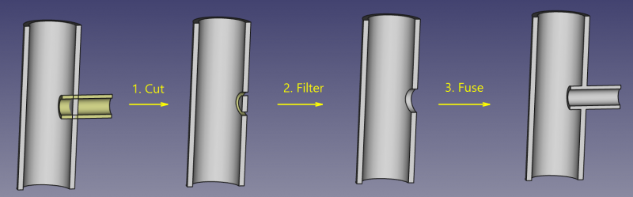

|
| Menu location |
|---|
| Part → Join → Embed Object |
| Workbenches |
| Part |
| Default shortcut |
| None |
| See also |
| Connect, Embed, Cutout, Part Booleans, Part Thickness |
Description
Embed tool embeds a walled object (e.g., a pipe) into another walled object.

How to use
- Select the base object first, then the object to be embedded. The order of selection is important. It is enough to select one sub-shape of each object (e.g., faces).
- Invoke the Part JoinEmbed command.
A Part JoinFeature object is created, with Mode set to 'Embed'. Original objects are hidden, and the result of embedding is shown in 3D view.
Properties
Base
- DATABase: Reference to base object (the one the other object is to be embedded into). The object should be a single solid.
- DATATool: Reference to tool object (the object to be embedded). The object can be a single solid, or a valid compound of solids.
- DATAMode: The mode of operation, equals 'Embed' (Changing that will transform the tool into another Part_JoinXXX). The value of 'bypass' can be used to temporarily disable the long computations (a compound of Base and Tool will be created, which is a fast operation).
- DATARefine: Sets whether to apply Refine operation or not, to the final shape. The default value is determined by a 'Automatically refine shape after boolean operation' checkbox in PartDesign preferences. When Mode property is 'bypass', Refine is ignored (never applied).
Example
- Create a pipe by applying thickness to a cylinder:

- Create another, smaller diameter pipe, and place it so that it pierces the wall of the first pipe:

- Select the first pipe, then the second pipe (order of selection is important), and click the 'Embed object' option from the Join tools dropdown toolbar button.

- Use some cross-section tool (Clipping plane, Arch Section Plane, Arch Cut Plane) to reveal internals. On the picture below, Arch Section Plane is used.


Algorithm
The algorithms behind Join tools are quite simple, and understanding them is important to use the tools correctly.
1. Base object is boolean-cut with Tool object. The resulting shape is a set (compound) of non-intersecting solids (typically, two).
2. The resulting compound is filtered: only the largest solid is kept.
3. That largest solid is boolean-fused with Tool object.
4. If Refine property is true, the resulting shape is refined.

{kind=link}
Notes
- If after step 1, the object remains in one piece, the result of Embed will be equivalent to union of Base and Tool, but taking longer to compute.
- Now, the tool will produce unexpected result, if a compound is supplied as Base. This may be changed in the future.
- Because the largest piece is determined by comparing volumes of pieces, the tool can only work with solids. This may be changed in the future.
Scripting
The Join tools can by used in macros and from the python console by using the following function:
JoinFeatures.makePartJoinFeature(name = 'Embed', mode = 'Embed')
- Creates an empty Embed feature (or other Join feature, depending on mode passed). The properties Base and Tool must be assigned explicitly, afterwards.
- Returns the newly created object.
Example:
import JoinFeatures j = JoinFeatures.makePartJoinFeature(name = 'Embed', mode = 'Embed' ) j.Base = FreeCADGui.Selection.getSelection()[0] j.Tool = FreeCADGui.Selection.getSelection()[1]
The tool itself is implemented in Python, see /Mod/Part/JoinFeatures.py under where FreeCAD is installed.
Version
The tool was introduced in FreeCAD v0.16.5069